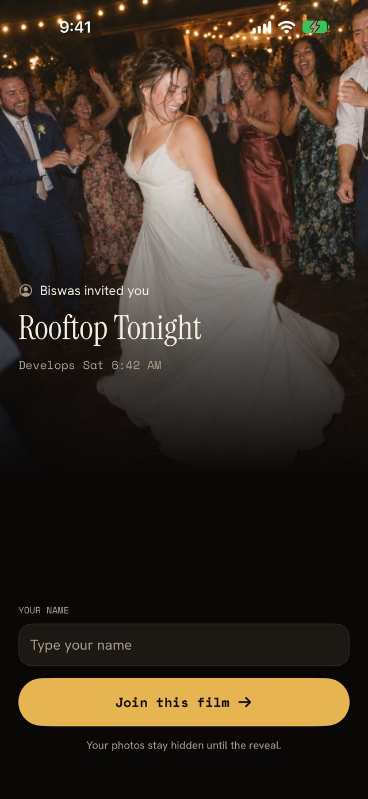

QR Code for Wedding Photos: How to Set One Up (and Test It)
Where it should point, how big to print it, and how to test it before the day.

Short answer: To set up a QR code for wedding photos, first decide where the photos will land (a shared camera app, a Google Photos album or a Dropbox file request), then turn that link into a static QR code. Print it at least 2 inches (5 cm) wide on table cards with a clear white border, and test it on an iPhone and an Android phone before printing.
A QR code is only a link you can scan. Everything that makes it work or fail at a wedding, from whether guests need an account to whether it still opens on the day, depends on where it points and how you print it. This guide walks through the setup in five steps, with print sizes, placement, sign wording and the failures that make guests give up.
Step 1: Decide where the photos will land
Pick the destination before you make the code, because it decides what a guest sees the second after they scan. If a sign-in screen appears, expect some of them to put the phone away.
| Destination | What guests do after scanning | Account needed? | Android guests | Best for |
|---|---|---|---|---|
| Shared camera app with browser join | Type a name, start shooting | No | Yes, in the browser | Collecting photos during the reception |
| Google Photos shared album | Sign in to Google, then add photos | Google Account | Yes | Guests who already use Google |
| iCloud Shared Album (made or upgraded on iOS 27 or later) | Join from the link, then add photos | No, on the web | Yes, on the web | Couples with spare iCloud storage |
| Dropbox file request | Pick files, then upload | No | Yes | Full-size files after the wedding |
| Google Drive folder | Sign in, then upload | Google Account | Yes | Families who all use Google |
A few details from that table are worth knowing before you choose:
- Google Drive needs accounts. People without a Google Account can’t upload into a regular Drive folder, so a “QR code for wedding photos to Google Drive” only works if your guests are Google users.
- iCloud now works for Android guests, but only in albums made on iOS 27 or later, or older albums you’ve upgraded to the new format. Apple lets the owner allow anyone with the link to join without approval. Turn that on, or you’ll be approving join requests during your first dance.
- Google Photos needs Collaborate on. Without it, guests can look at the album but can’t add to it. Our Google Photos shared album guide covers the settings.
For the full comparison of all nine collection methods, including hashtags and disposable cameras, see how to collect photos from wedding guests.
Step 2: Make the code (static or dynamic?)
If your destination makes its own code, use it. A Google Photos shared album can show a QR code from its Share menu (Show QR Code), and Google notes that shared album links can be shared by a QR code unique to your album. A shared camera app should generate one for you; if it doesn’t, use its invite link. For an iCloud album or a Dropbox file request, copy the link and paste it into any QR generator.
Static vs dynamic QR codes
A static code stores your link directly in the pattern. It never expires, though it will stop working if the link itself dies. A dynamic code stores a short redirect link owned by the generator company, which lets you change the destination later and count scans.
That redirect is the catch. QR Code Generator (qr-code-generator.com) says its dynamic codes made during a free trial deactivate automatically when the trial period finishes, and that if you stop paying, the links pause. Check the terms of any generator before you print the table cards. For a wedding, a static code pointing at a link you control is the safer choice.
Keep the code simple
- Use the shortest link you can. A longer link makes a denser pattern, and a denser pattern needs more printed space to scan.
- Download it as SVG or a high-resolution PNG, so it stays sharp when your designer or print shop scales it.
- Go easy on decoration. A monogram in the center only works because the code’s built-in error correction rebuilds the covered part. Keep it small and test it hard.
- Don’t reset the link after printing. In Google Photos, turning link sharing off and on again creates a new link, and the old one, the one on your signs, stops working.
Step 3: Get the size, contrast and border right
Uniqode, a QR platform, recommends a minimum of 2 × 2 cm (about 0.8 in) for scanning at arm’s length, and a simple rule for everything else: code width equals scanning distance divided by 10, plus 20 to 30% for real-world conditions. Here is that rule applied to a wedding, using rough distances and the 25% midpoint.
| Where the code goes | Scanning distance (about) | Distance ÷ 10, plus 25% | Print it at least |
|---|---|---|---|
| Place card or table card | 40 cm (16 in) | 5 cm | 2 in (5 cm) |
| Bar or guest book sign | 1 m (about 3 ft) | 12.5 cm | 5 in (13 cm) |
| Welcome sign on an easel | 1.5 m (5 ft) | 19 cm | 7.5 in (19 cm) |
Leave a quiet zone
The standard behind QR codes needs a clear margin around them: a four-module wide margin at all sides, according to DENSO WAVE, the company that invented the QR code. A module is one of the tiny squares in the pattern. In practice, leave a plain white border at least as wide as four of those squares, and don’t let a frame, a flower illustration or the edge of the card touch it.
Contrast and paper
- Print a dark code on a light background. Black on white or cream is the safest choice.
- Skip gold foil, glitter and glossy lamination on the code itself. Shiny surfaces throw glare under reception lighting.
- Matte card stock in an acrylic or glass frame is fine, as long as you test it at an angle under the real lights.
Step 4: Test it on an iPhone and an Android phone
Most failures show up in five minutes of testing, so do this with a printed proof, not just the file on your screen.
- Scan with an iPhone. Open the Camera app, point it at the code and tap the link that appears.
- Scan with an Android phone. Use the camera app or Google Lens. Borrow one if your household is all iPhone.
- Use a phone that isn’t yours. Your phone is signed in to your accounts, so it hides login walls. A friend’s phone shows what a guest will see.
- Turn off Wi-Fi. Guests scan on mobile data, and the venue’s signal may be weak. If the page is slow at home on mobile data, it will be worse in a stone barn.
- Add a test photo and check it lands where you expect, then delete it.
- Scan in dim light from table distance. Receptions are darker than your kitchen. Try candlelight and a card lying flat on the table.
- Re-test the week of the wedding, and again the morning of if you used a dynamic code.
Step 5: Where to put wedding photo QR codes
Put a code wherever guests stand still with a free hand. The spots that work best:
- Every table, on a table card or the back of the table number.
- The welcome sign at the entrance, large enough to scan from the line.
- The bar, where guests wait with nothing to do.
- Cocktail hour high-tops and the guest book table.
- The photo booth, so booth photos can go in the same place.
- A small card on the bathroom mirror, where guests pause anyway.
As a rough count, plan one code per table plus two or three larger signs. Say you have 120 guests at tables of eight: that’s 15 table cards and a welcome sign, a bar sign and a booth sign.
What to write next to the QR code
Keep it to one verb and one reason, and tell guests what happens next. A few lines to adapt:
Scan to add your photos to our wedding album. We’ll share every one with you next week.
Be our second shooter. Scan, type your name and start taking photos, right in your phone’s browser.
Our disposable camera for tonight. Scan to join. The photos stay hidden until tomorrow morning, so shoot freely!
For 40-plus more lines, from classic to playful, see our wedding QR code sign wording, or download the free printable table sign in the wedding guest photo plan.
Why a QR code for wedding photos stops working
| What goes wrong | What guests see | The fix |
|---|---|---|
| The link opens a sign-in wall | “Sign in to continue” | Pick a destination that doesn’t need an account, or say so on the sign |
| Adding is switched off | Photos they can view but not add to | Turn on Collaborate in Google Photos, or the matching setting elsewhere, then test from a second phone |
| The album needs approval | A request button and a wait | Let anyone with the link join without approval |
| A free dynamic code expired | An error page | Use a static code, or keep the plan paid through the wedding |
| The link was reset | A dead link | Never reset sharing after you print |
| Printed too small or too dense | A camera that won’t lock on | Print bigger and shorten the link |
| Glossy, foil or low-contrast print | Glare, no scan | Dark on light, on matte paper |
| No border around the code | Slow or failed scans | Leave a white quiet zone of four modules |
How to make a wedding photo QR code with Filmsera
If you’d rather use a wedding photo app with the QR code built in, Filmsera makes it for you. Create a film for the wedding in the iPhone app and pick when it develops. The “Tonight”, “Tomorrow” and “In 3 days” presets all develop at 9 p.m., so for a reveal the next morning, choose “Custom” and set the time. You then get an invite card with a QR code, a share code and a link, plus Save card, Save QR and Share invite buttons. Save the QR for your stationer, or save the whole card and print it as is.

Guests scan it and join either in the free Filmsera iPhone app or from their phone’s browser, with no app or account: they type a name and start shooting. Android guests join and shoot in their phone’s browser. Every photo stays hidden until the reveal time you picked, then the whole roll appears at once for everyone in the film.

Know the limits before you print: the host needs an iPhone, browser guests take photos only (no video clips), and hosting is free for up to 10 guests, with a one-time pass for bigger weddings. The Filmsera weddings page has the details.
Filmsera creates the QR code, the share code and the link for your wedding film, ready to save and print. Get Filmsera on the App Store
FAQ
Can I make a QR code for wedding photos for free?
Yes. Any generator can make a static QR code for free, and a static code never expires as long as the link behind it keeps working. Google Photos shared albums can show their own code, and Filmsera’s invite card includes one. Be wary of free trials of dynamic codes: some providers switch them off when the trial ends, which you might not notice until guests scan a dead code.
Can I use a Google Drive link for a wedding photo QR code?
You can, but only guests with a Google Account will be able to upload, because people without one can’t add files to a regular Drive folder. Drive keeps original files, which is a plus. If many guests don’t use Google, a Dropbox file request accepts uploads without an account, though every file counts against your Dropbox storage.
How big should a QR code be on a wedding sign?
Divide the scanning distance by 10 and add about 25%. That works out to at least 2 inches (5 cm) on a table card, around 5 inches (13 cm) on a bar sign, and around 7.5 inches (19 cm) on a welcome sign read from 5 feet away. Never go below 2 cm (0.8 in), and leave a clear white border around the code.
Do QR codes for wedding photos expire?
Static codes don’t expire, but they stop working if the link they point to is deleted or reset. Dynamic codes depend on the company that made them: if a free trial ends or a subscription lapses, the redirect can stop working. For a wedding, use a static code pointing at a link you control, and re-test it the week before.
Do guests need an app to scan a wedding QR code?
No. iPhones scan QR codes with the built-in Camera app, and most Android phones scan them with the camera app or Google Lens. What happens after the scan depends on where the code points: some destinations open in the browser, while others ask guests to sign in or install an app, so test with a phone that isn’t yours.
Written by the Filmsera team
Filmsera is a shared disposable camera app for iPhone: create a film for your event, let guests join by QR code from the app or their phone's browser, and open the whole roll together at the reveal. Download on the App Store →
Photos in this article are illustrations created for Filmsera, not customer photos. App screenshots are from Filmsera on iPhone.